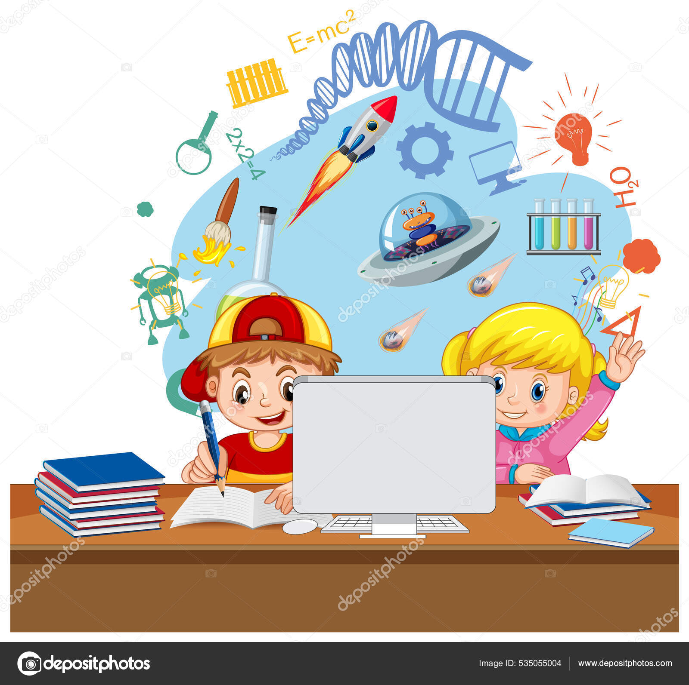

Refleksi Belajar di Tengah Tantangan

Saat tugas menumpuk dan otak udah mulai panas, justru di situ aku belajar bahwa
"proses" adalah bagian paling berharga dari perjuangan. Kadang ingin menyerah,
tapi ingat tujuan membuatku tetap melangkah.
"Jangan lelah menjadi versi terbaik dari dirimu sendiri."
Aku mulai belajar bukan cuma demi nilai, tapi juga untuk membuktikan bahwa
aku mampu tumbuh meski banyak yang meragukan.
Sumber inspirasi: Wikipedia - Motivasi
Kenapa Aku Memilih Dunia Teknologi

Dunia teknologi seperti ladang luas tempat ide-ide bisa hidup dan tumbuh.
Aku memilih belajar coding karena ingin menciptakan sesuatu yang nyata, yang bisa bermanfaat untuk orang banyak.
"Teknologi tidak akan menggantikan manusia, tapi manusia yang paham teknologi akan menggantikan yang tidak."
Harapanku ke depan, aku bisa mengembangkan aplikasi yang bisa bantu masyarakat entah itu UMKM, pelajar, atau komunitas.
Baca juga: Kenapa Banyak Orang Belajar Ngoding